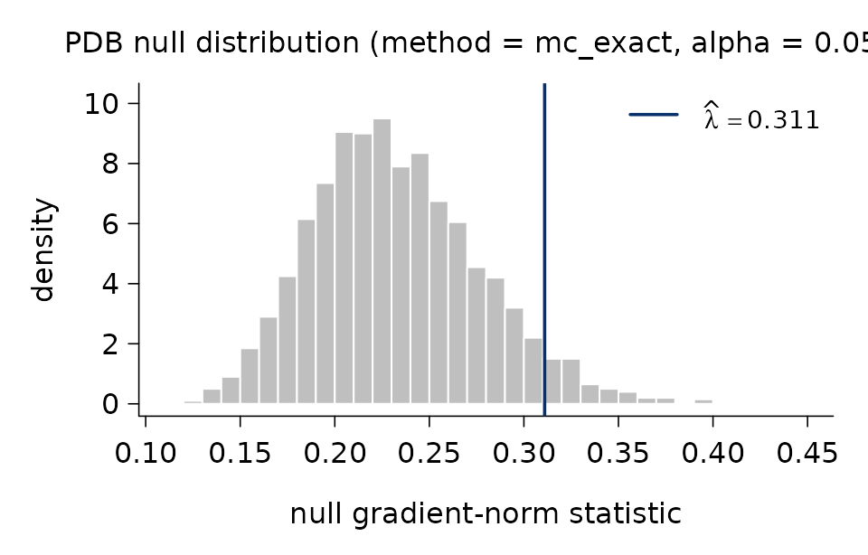
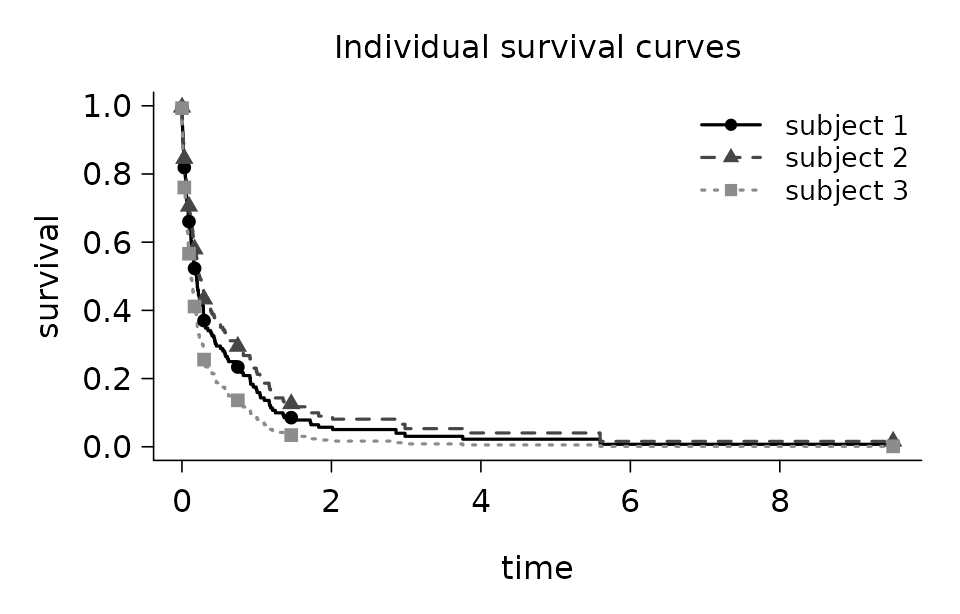
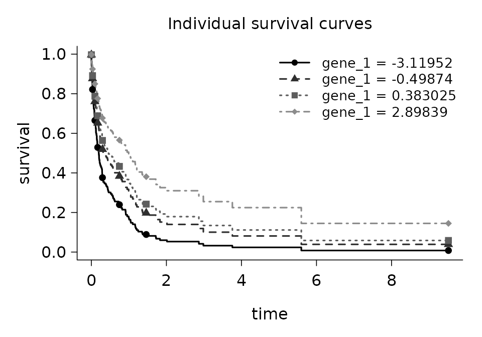
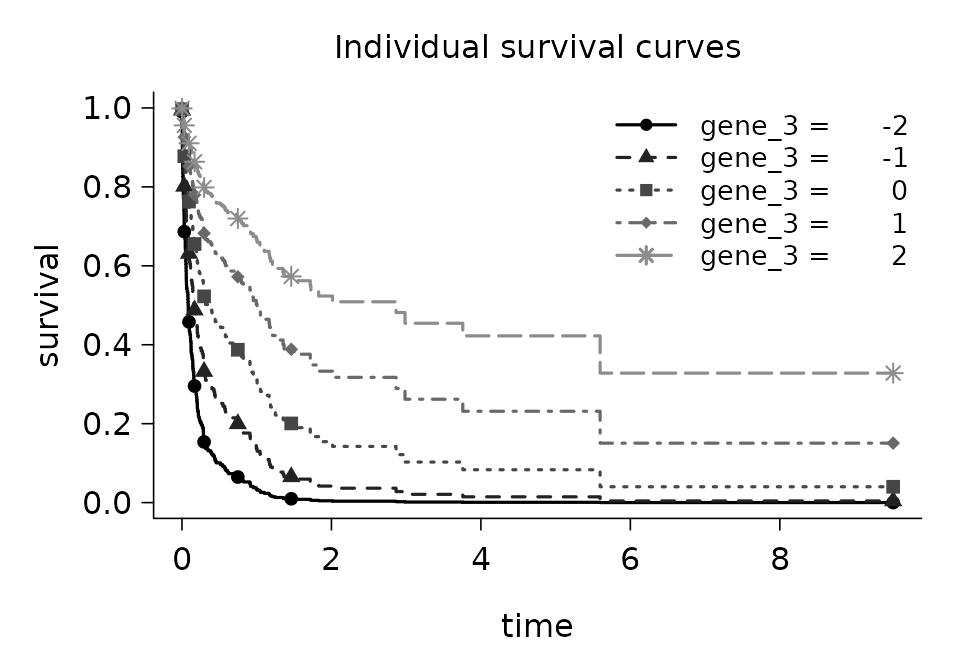
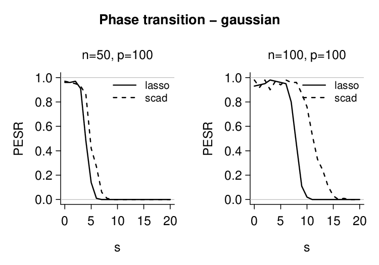
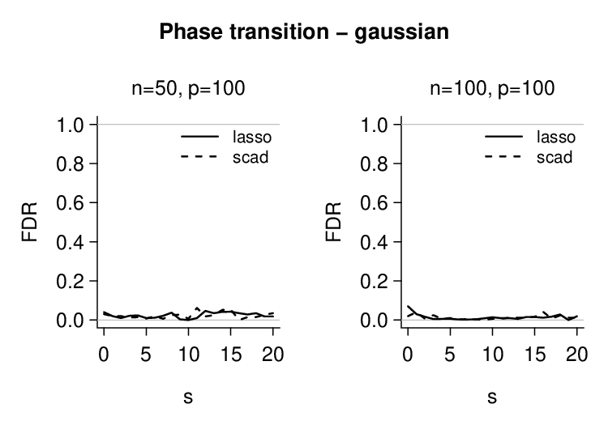
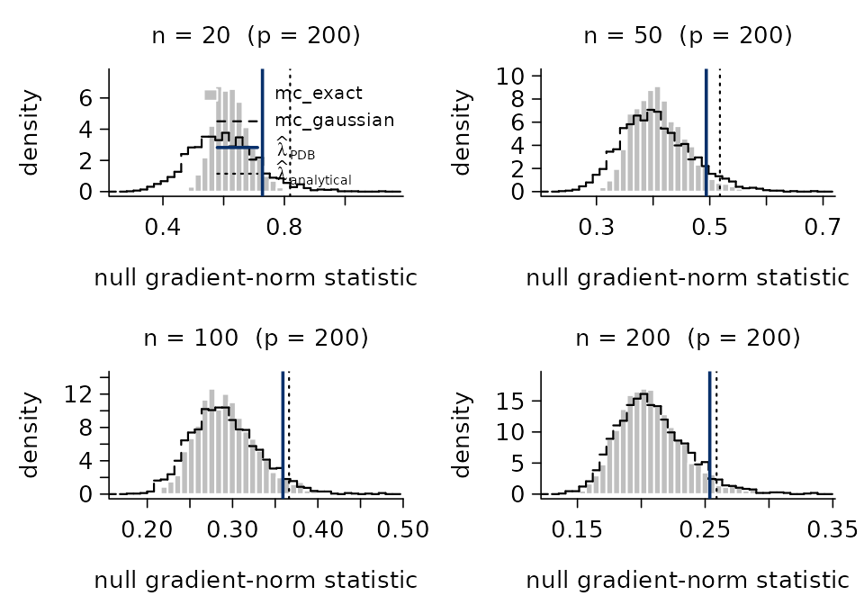
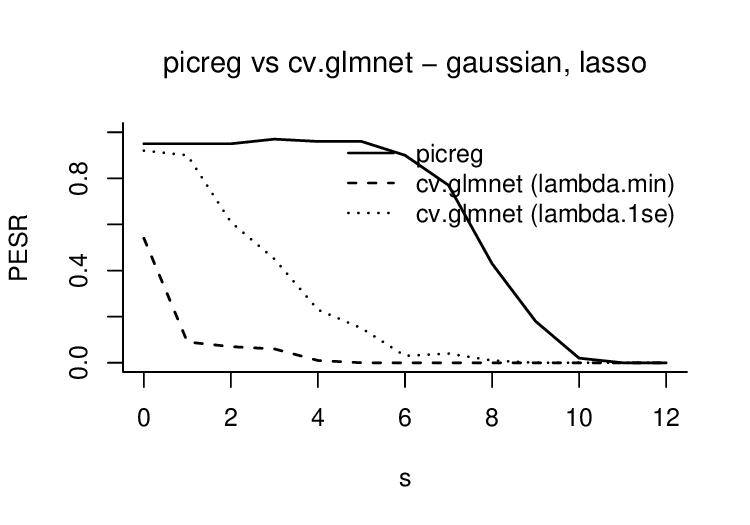

An introduction to `picreg`
Maxime van Cutsem
Sylvain Sardy
June 04, 2026
Source:vignettes/vignette.Rmd
vignette.RmdIntroduction
picreg is the R implementation of the Pivotal
Information Criterion (PIC) developed by Sardy, van Cutsem, and
van de Geer in https://arxiv.org/abs/2603.04172. PIC is a general
framework to improve on BIC and LASSO for fitting sparse regression
linear models in which the regularization parameter \lambda is selected automatically from a
pivotal statistic. As a result, PIC removes the need for
cross-validation and achieves more accurate support recovery by better
identifying the true non-zero coefficients. The package fits the
resulting estimators across six response distributions - Gaussian,
binomial, Poisson, exponential, Gumbel, and Cox - combined with three
sparsity-inducing penalties; \ell_1
(LASSO), the Smoothly Clipped Absolute Deviation (SCAD), and Minimax
Concave Penalty (MCP).
Given data \mathcal{D} = (X, y),
where X \in \mathbb{R}^{n \times p}
denotes the design matrix and y \in
\mathbb{R}^n the response vector, a base loss l_n(\boldsymbol{\theta}, \sigma; \mathcal{D}) =
\frac{1}{n} \sum_{i=1}^n l(\theta_i, \sigma; \mathcal{D}) (with a
possible nuisance parameter \sigma),
and a sparsity-inducing penalty P
(possibly non-convex), pic() minimizes the Pivotal
Information Criterion (PIC) by solving
\min_{\beta_0,\,\boldsymbol{\beta}}\left\{
\phi\bigl(l_n(\boldsymbol{\theta}, \sigma; \mathcal{D})\bigr)
+ \lambda_\alpha^{\mathrm{PDB}}\, P(\boldsymbol{\beta})\right\},
\qquad
\boldsymbol{\theta} = g\bigl(\beta_0\mathbf{1} +
X\boldsymbol{\beta}\bigr),
where \lambda_\alpha^{\mathrm{PDB}} is the
pre-fixed for the parameter \lambda
chosen as the upper \alpha-quantile of
a statistic \Lambda made pivotal with
respect to unknown parameters \sigma,\,
\beta_0 thanks to the distribution-specific pair (\phi,\, g).
Internally, picreg uses FISTA (Fast Iterative
Soft-Thresholding Algorithm) as the optimization scheme.
Installation
picreg is available on CRAN:
install.packages("picreg")Alternatively, the development version can be installed from GitHub:
# install.packages("remotes")
remotes::install_github("VcMaxouuu/picreg")Once installed, load it with:
Quick start
This section walks through the shared interface that all six distributions expose: fitting a model, inspecting it, predicting on new data, selecting the regularization parameter, and visualizing the relevant quantities. Distribution-specific tooling is deferred to the Generalised linear models section.
We illustrate the workflow on the default Gaussian distribution with
the LASSO (\ell_1) penalty. The package
ships a small synthetic dataset QuickStartExample (n = 100, p =
30, of which 5 active variables and 25 noise variables). Active
columns are named gene_1, ..., gene_5 and noise columns
noise_1, ..., noise_25.
data(QuickStartExample)
X <- QuickStartExample$X
y <- QuickStartExample$yFitting a model
The simplest call to pic() returns a fitted model with
all defaults: Gaussian distribution, LASSO penalty, automatic PDB
selection of \lambda:
fit <- pic(X, y)These defaults can be overridden through two main arguments:
-
family: the response distribution:"gaussian"(default),"binomial","poisson","exponential","gumbel", or"cox". -
penalty: the sparsity-inducing penalty used during training:"lasso"(default),"scad", or"mcp".
Behind the scenes, pic() standardizes the columns of
X to zero mean and unit variance, computes \lambda_\alpha^{\mathrm{PDB}}, and minimizes
the objective with FISTA. A concise summary is available through the
summary method:
summary(fit)## pic fit summary
## family : gaussian
## penalty : lasso
## lambda : 0.311
## dimensions: n = 100, p = 30
## selected : 5 / 30
## intercept : 0.006603
##
## Non-zero coefficients (original scale):
## variable coefficient
## gene_3 -0.7508
## gene_4 -0.6489
## gene_1 -0.4028
## gene_5 0.1380
## gene_2 -0.0463Inspecting the fit
The returned object carries everything needed for downstream analysis:
# Number of selected features and their identifiers
fit$df## [1] 5
fit$selected## [1] "gene_1" "gene_2" "gene_3" "gene_4" "gene_5"
# Selected regularization parameter
fit$lambda## [1] 0.3109731
# Family and penalty descriptors
fit$family## family: gaussian (link g = identity, phi = sqrt)
fit$penalty## lasso()When X is supplied as a data frame, or as a matrix
carrying column names, picreg uses them throughout the
output. As shown above, fit$selected returns the
names of the selected variables rather than their
integer indices. Bare matrices fall back to the default
V1, ..., Vp naming.
Coefficients
The full coefficient vector is accessible either through
fit$beta (standardized, numeric vector) or through
coef(), which returns a one-column sparse matrix (class
"dgCMatrix") on the original scale of
X by default; zero coefficients are printed as
.. Note that fit$beta is a bare numeric vector
and carries no variable names, whereas coef() is more
informative: it labels every coefficient with its variable name (and
adds the "(Intercept)" row):
coef(fit) # original scale## 31 x 1 sparse Matrix of class "dgCMatrix"
## coefficient
## (Intercept) 0.00660255
## gene_1 -0.40277095
## noise_1 .
## noise_2 .
## noise_3 .
## gene_2 -0.04628404
## noise_4 .
## noise_5 .
## noise_6 .
## noise_7 .
...
# coef(fit, standardized = TRUE) # standardized scale; same as fit$betaPredicting on new data
The user can make predictions from the fitted object using the
predict() function. The primary argument is
newx, a matrix of values for X at which
predictions are desired. Two types are universally available:
"link" (the linear predictor X\boldsymbol{\beta} + \beta_0) and
"response" (the mean response g(\eta)). In the Gaussian case of course
(since g is the identity), both types
gives the same outputs. Binomial fits additionally accept
type = "class" for hard label prediction.
predict(fit, newx = X[1:5,]) # response## [1] 0.4305631 1.8606175 -1.0359871 1.1197544 0.2146807
predict(fit, newx = X[1:5,], type = "link") # linear predictor## [1] 0.4305631 1.8606175 -1.0359871 1.1197544 0.2146807Visualizing the fit
The standard plot method draws the non-zero coefficients
in descending order of absolute magnitude:
plot(fit)Each segment represents the value of one selected coefficient. The
descending order makes the relative importance of the selected variables
immediately visible. Passing standardized = FALSE rescales
the displayed coefficients back to the original scale of X. In that case, differences in predictor
scales may distort the relative magnitudes of the coefficients, so
direct comparisons between them are generally no longer meaningful.
Selecting the regularization parameter
The parameter \lambda governs the
trade-off between data fit and sparsity. pic() selects it
automatically as \lambda=\lambda_\alpha^{\mathrm{PDB}}.
The selection of \lambda is
calibrated such that, under the null hypothesis H_0:\boldsymbol{\beta} = \mathbf{0}, the
estimated model that minimizes PIC returns no selected variables with
high probability. To that aim, the pivotal detection boundary \lambda_\alpha^{\mathrm{PDB}} is defined as
the upper \alpha-quantile of
\Lambda=\left\lVert \nabla_{\boldsymbol\beta}\left(\phi\circ l_n\right)
\left(g(\hat\beta_0\mathbf 1), \hat\sigma; (X, Y_0)\right)
\right\rVert_\infty,
that is, the gradient evaluated at \boldsymbol{\beta} = \mathbf{0} given data
sampled under the null hypothesis Y_0.
The nuisance parameters are set to their maximum-likelihood estimates.
By default alpha = 0.05 in a pic() call. The
quantile depends only on X, the
underlying distribution family, and \alpha. It is independent of the observed
response data y. As a result, the
tuning-free parameter \lambda_\alpha^{\mathrm{PDB}} can be
determined a priori.
Calculation methods
The quantile is calculated via one of three methods, set through the
lambda_method argument of pic():
"mc_exact"(default). Distribution/family-aware Monte Carlo: for each oflambda_n_simudraw, a null response is sampled, the distribution-specific gradient is evaluated at \boldsymbol{\beta} = \mathbf{0}, and its supremum norm is recorded. The empirical (1-\alpha) quantile of the simulated norms is returned."mc_gaussian". Samples the gradient directly from its Gaussian CLT limit \mathcal{N}\bigl(0,\, c(n)\,\Sigma_X / n\bigr), with \Sigma_X = X^\top X / n and c(n) a distribution-specific scaling factor. Cheaper than"mc_exact"and essentially equivalent once n is moderately large."analytical". Closed-form Bonferroni bound, \Phi^{-1}\!\bigl(1 - \alpha / (2p)\bigr) \sqrt{c(n)/n}. Not based on a Monte-Carlo simulation, O(1), slightly conservative. Useful in ultra-high dimensions.
Visualizing the null distribution
Monte Carlo methods keep the simulated null statistics on the fit and
can be visualized by calling plot() on
fit$lambda_pdb. By default pic() uses
lambda_n_simu = 2000 Monte-Carlo simulations.
plot(fit$lambda_pdb)
The histogram shows the empirical distribution of the null and the
vertical line marks the selected \widehat{\lambda} at the (1-\alpha) quantile. A more detailed text
summary is available through pdb_summary():
pdb_summary(fit)## PDB lambda selector
## -------------------
## method : mc_exact
## alpha : 0.05
## n_simu : 2,000
## lambda_hat : 0.311
##
## Null distribution:
## min q05 q25 median q75 q95 max
## 0.1135 0.1656 0.2014 0.2283 0.2606 0.3108 0.4406
##
## mean = 0.2326 sd = 0.0444The "analytical" method has no simulated draw and
therefore nothing to plot; pdb_summary() then reports only
the selector metadata.
Supplying \lambda manually
A value of \lambda known in advance
- from a previous fit, from theory, or to share the same regularization
across penalties on the same dataset - can be supplied directly via the
lambda argument of pic(). The PDB calibration
is then skipped. This is particularly useful when comparing the three
penalties (LASSO, SCAD, MCP) on the same problem, since the PDB choice
of \lambda does not depend on the
penalty itself.
fit_lasso <- pic(X, y, penalty = "lasso", lambda = fit$lambda)
fit_scad <- pic(X, y, penalty = "scad", lambda = fit$lambda)
fit_mcp <- pic(X, y, penalty = "mcp", lambda = fit$lambda)
data.frame(
penalty = c("lasso", "scad", "mcp"),
df = c(fit_lasso$df, fit_scad$df, fit_mcp$df),
lambda = c(fit_lasso$lambda, fit_scad$lambda, fit_mcp$lambda)
)## penalty df lambda
## 1 lasso 5 0.3109731
## 2 scad 5 0.3109731
## 3 mcp 5 0.3109731Generalised linear models
The interface described in the Quick start applies unchanged
to all six distributions. Each one is identified by a name string passed
to family = and is characterized by the pair (\phi, g): \phi applied to the base loss, and g relating the linear predictor \eta = \beta_0 + X\boldsymbol{\beta} to the
mean response.
Gaussian
"gaussian" is the default family argument
for pic(). The objective function for the Gaussian
distribution uses the MSE for l_n and
\phi(\cdot) = \sqrt{\cdot}, g(\cdot) = \mathrm{Id} as transformations,
resulting in the square-root LASSO objective
\min_{\beta_0,\,\boldsymbol{\beta}}\left\{\sqrt{\frac1n\sum_{i=1}^n\left(y_i-(\beta_0+\mathbf
x_i^T\boldsymbol\beta\right)^2}
+ \lambda_\alpha^{\mathrm{PDB}}\, P(\boldsymbol{\beta})\right\}.
This is the canonical pivotal alternative to the standard
squared loss: it makes the gradient at \boldsymbol{\beta} = 0 scale-free, so the PDB
threshold does not require an estimate of the noise standard
deviation.
Binomial
family = "binomial" is used for logistic regression when
the responses y_i \in \{0, 1\} are
binary. In this case, pic requires y to be a
vector containing only 0 and 1 values. Any other format or values in
y will return an error. picreg uses a
variance-stabilized transformation of the Bernoulli likelihood. With
\phi(\cdot) = \mathrm{Id} and the
logistic link \theta_i = g(\eta_i) = (1 +
e^{-\eta_i})^{-1}, pic(family = "binomial")
minimizes
\min_{\beta_0, \boldsymbol\beta}\left\{
\frac{1}{n}\sum_{i=1}^{n}\left(
2 y_i \sqrt{\tfrac{1 - \theta_i}{\theta_i}}
+ 2 (1 - y_i) \sqrt{\tfrac{\theta_i}{1 - \theta_i}}
\right)+\lambda_\alpha^{\rm PBD}P(\boldsymbol\beta)\right\}, \qquad
\theta_i = \frac{1}{1+\exp(-(\beta_0+\mathbf x_i^T\boldsymbol\beta))}
The classical logistic link is preserved; only the loss itself
is modified to obtain a pivotal gradient at the null.
data(BinomialExample)
X <- BinomialExample$X
y <- BinomialExample$y
fit_binom <- pic(X, y, family = 'binomial')
print(fit_binom)## pic fit (pic.binomial)
## family : binomial
## penalty : lasso
## lambda : 0.191493
## selected : 5 / 50
## intercept: -0.281037Binomial fits additionally support hard label prediction when passing
type = "class" to the predict() function.
predict(fit_binom, newx = X[1:5, ], type = 'response')## [1] 0.4193490 0.7368105 0.2277823 0.3310245 0.5189012
predict(fit_binom, newx = X[1:5, ], type = 'class')## [1] 0 1 0 0 1Poisson
For count responses y_i \in
\mathbb{N}, the same pivotalization recipe is applied to the
Poisson likelihood. With \phi(\cdot) =
\mathrm{Id} and the canonical log link \theta_i = g(\eta_i) = e^{\eta_i},
pic(family = "poisson") minimizes
\min_{\beta_0, \boldsymbol\beta}\left\{
\frac{1}{n}\sum_{i=1}^{n}\!\left(
\frac{2 y_i}{\sqrt{\theta_i}} + 2 \sqrt{\theta_i}
\right)+\lambda_\alpha^{\rm PDB}P(\boldsymbol\beta)\right\}, \qquad
\theta_i = \exp(\beta_0+\mathbf x_i^T\boldsymbol\beta).
The canonical log link is kept unchanged; the pivotal property
is obtained through the loss rather than through the link.
pic requires y to be a vector containing only
non negative values.
Exponential
The standard Exponential negative log-likelihood is used directly, no
transformation are needed. With \phi(\cdot) =
\mathrm{Id} and \theta_i = g(\eta_i) =
e^{\eta_i}, pic(family = "exponential") minimizes
\min_{\beta_0, \boldsymbol\beta}\left\{
\frac{1}{n}\sum_{i=1}^{n}\left(
\log{\theta_i} + \frac{y_i}{\theta_i}
\right)+\lambda_\alpha^{\rm PDB}\right\}, \qquad \theta_i =
\exp(\beta_0+\mathbf x_i^T\boldsymbol\beta).
Again, pic requires y to be a vector
containing only non negative values.
Gumbel
The Gumbel distribution targets location-scale models with extreme-value noise. The base log-likelihood is l_n(\boldsymbol{\theta}, \sigma) = \log(\sigma) + \frac{1}{n}\sum_{i=1}^{n} \bigl(z_i + e^{-z_i}\bigr), \qquad z_i = \frac{y_i - \theta_i}{\sigma}. With \phi(\cdot) = \exp(\cdot) and the identity link \theta_i = g(\eta_i) = \eta_i, the optimization objective is \phi\bigl(\ell_n(\boldsymbol{\theta}, \sigma; \mathcal{D})\bigr) = \exp\bigl(\ell_n(\boldsymbol{\theta}, \sigma)\bigr). The scale parameter \sigma is re-estimated internally by maximum likelihood at every iteration; the user does not pass it explicitly.
Cox
The Cox proportional-hazard model is the survival counterpart of the
other GLMs. The response y must be a two-column matrix
(t_i, \delta_i) of event times and
event indicators (\delta_i = 1 if
event, 0 if censored). With \phi(\cdot) = \sqrt{\cdot} and \theta_i = g(\eta_i) = \eta_i,
pic(family = "cox") minimizes the square-root normalized
partial log-likelihood:
\min_{\boldsymbol\beta}\left\{
\sqrt{
-\frac1n\left(
\sum_{i=1}^{n} \delta_i \eta_i
- \sum_{i=1}^{n} \delta_i
\log\left(\sum_{j \in R_i} e^{\eta_j}\right)
\right)}+\lambda_\alpha^{\rm PDB}P(\boldsymbol\beta)\right\},
where R_i denotes the risk set
at event time t_i. Breslow
approximation for tied event times is used. When
family = "cox" is used, pic automatically fits
the model without an intercept.
The package ships a small survival dataset CoxExample
(n = 250, p =
50, with 5 active variables and 45 noise variables) generated
under an exponential proportional-hazards model with independent
exponential censoring. The censoring rate is roughly 40\%. The response is a two-column matrix
with columns time and event, the standard
input format for family = "cox".
## time event
## [1,] 0.005565264 1
## [2,] 0.017211836 1
## [3,] 0.017762667 1
## [4,] 0.794925355 0
## [5,] 0.008978275 1
## [6,] 0.123304085 1
## [7,] 0.179501892 0## pic fit (pic.cox)
## family : cox
## penalty : lasso
## lambda : 0.0476666
## selected : 5 / 50In addition to the shared interface, pic.cox objects
carry the Breslow estimates of the baseline cumulative hazard H_0(t) and the baseline survival S_0(t) = \exp\!\bigl(-H_0(t)\bigr),
accessible directly through
fit_cox$baseline_cumulative_hazard and
fit_cox$baseline_survival. They are also visualized through
plot_baseline():
plot_baseline(fit_cox)For any new design, predict_survival_function() returns
the common time grid and a matrix of survival probabilities, one column
per subject. The result is plotted directly with
plot_survival_curves():
sf <- predict_survival_function(fit_cox, newx = X_cox[1:3, ])
plot_survival_curves(sf)
To visualize how a selected variable affects the predicted survival
curve, feature_effects_on_survival() evaluates the model on
a set of “profile” subjects where all covariates are fixed at their
column means except the chosen feature, which varies across several
values. By default, the function uses four empirical quantiles of the
feature, or all distinct values for small categorical or ordinal
variables. The result can be passed directly to
plot_survival_curves(). Only variables in the selected
support can be queried.
fx <- feature_effects_on_survival(fit_cox, idx = "gene_1")
plot_survival_curves(fx)
A custom grid of values can also be supplied explicitly through the
values argument:
fx <- feature_effects_on_survival(fit_cox,
idx = "gene_3",
values = c(-2, -1, 0, 1, 2))
plot_survival_curves(fx)
Assessing a fit
Once a model has been trained, assess() reports a
compact set of out-of-sample metrics tailored to the distribution. It
accepts a fit, a new design matrix, and the corresponding response, and
returns a two-column data.frame with columns
metric and value:
data(QuickStartExample)
X <- QuickStartExample$X
y <- QuickStartExample$y
fit <- pic(X, y)
assess(fit, newx = X, newy = y)## metric value
## MSE 1.8231585
## MAE 1.0851878
## R2 0.5900742The metrics depend on the distribution/family:
| Family | Metrics reported |
|---|---|
| Gaussian | MSE, MAE, R² |
| Binomial | accuracy, AUC, deviance |
| Poisson | MSE, MAE, deviance |
| Exponential | MSE, MAE, deviance |
| Gumbel | MSE, MAE, deviance |
| Cox | C-index, partial log-likelihood |
For Cox fits, newy must be a two-column matrix
(time, event), the same format used at training:
data(CoxExample)
fit_cox <- pic(CoxExample$X, CoxExample$y, family = "cox")
assess(fit_cox, newx = CoxExample$X, newy = CoxExample$y)## metric value
## c_index 0.8354248
## partial_log_likelihood 2.5264204A note on bias and refitting
A word of caution when interpreting the predictive metrics: by
default pic() is called with relax = FALSE, so
the reported coefficients still carry the shrinkage induced by the
penalty. This is particularly pronounced with the LASSO
(penalty = "lasso"), whose bias on non-zero coefficients
does not vanish even as the signal grows. SCAD and MCP reduce this
effect but the residual bias is still non-negligible for moderate
signals.
When the goal is prediction quality, the safest pattern is to refit on the selected support without penalization. Two ways:
Call
pic()withrelax = TRUE. After the regularized path converges, an unpenalized refit is run on the selected variables, yielding debiased coefficients that are immediately usable for prediction.Manually re-fit on the subset
X[, fit$selected]with the estimator of your choice.
## metric value
## MSE 0.7631608
## MAE 0.6993721
## R2 0.8284080Support-recovery diagnostics
In a simulation setting where the true active set is known, the
optional true_features argument appends four
support-recovery metrics to the output: the indicator
exact_recovery (1 if the selected support equals the
truth), the true-positive rate (tpr, sensitivity), the
false-discovery rate (fdr), and the F1 score combining
both. Names or integer positions are accepted:
## metric value
## MSE 1.8231585
## MAE 1.0851878
## R2 0.5900742
## exact_recovery 1.0000000
## tpr 1.0000000
## fdr 0.0000000
## f1 1.0000000Diagnostics
picreg exposes two complementary diagnostic tools to
assess the behavior of the PIC procedure: support-recovery curves under
a sparse-signal Monte Carlo design (phase_transition()),
and the asymptotic behavior of the PDB parameter itself in n (pdb_asymptotic()).
Phase transition curves
phase_transition() quantifies, by Monte Carlo, the
probability that pic() recovers exactly the true active set
as the sparsity level s of the
underlying signal varies between 0 and
s_max. For each s in the
grid, m datasets are generated under
the chosen distribution/family with s
uniformly random active variables; the function then reports three
metrics — exact recovery, true-positive rate, and false-discovery rate —
averaged over the replications.
The example below uses a small Monte Carlo size and two
configurations. Several penalties can also be requested in a single call
(penalty = c("lasso", "scad", "mcp")). Parallel execution
over the m replications is enabled with
parallel = TRUE.
pt <- phase_transition(
n = c(50, 100),
p = c(100, 100),
type = "gaussian",
s_max = 20,
m = 100,
penalty = c("lasso", "scad"),
parallel = TRUE
)
plot(pt)
The curves report the probability of exact support
recovery: for each configuration the chance that
pic() selects precisely the s active variables. The same call accepts
metric = "tpr" or metric = "fdr" in the
plot method to inspect the true-positive rate or the
false-discovery rate.
plot(pt, metric = "fdr")
Asymptotic behavior of the pivotal statistic \Lambda
pdb_asymptotic() runs the three methods for the
calculation of \lambda_\alpha^{\mathrm{PDB}} -
mc_exact, mc_gaussian, analytical
- across a grid of sample sizes n, on a
fixed dimensionality p. The result
allows one to visualize both the agreement between methods and the rate
at which \lambda_\alpha^{\mathrm{PDB}}
changes with n. The filled grey
histogram is the simulated mc_exact; the dashed step curve
overlays the distribution sampled from the CLT Gaussian approximation
(mc_gaussian); the solid navy line marks \hat\lambda^{\mathrm{PDB}}_\alpha as
estimated by mc_exact, and the dotted vertical line shows
the closed-form Bonferroni bound (analytical).
as_ <- pdb_asymptotic(
n_grid = c(20, 50, 100, 200),
p = 200,
type = "binomial",
n_simu = 2000L
)
plot(as_)
Comparison with other packages
A widely used package for penalized linear regression in the R
ecosystem is glmnet (Friedman, Hastie
& Tibshirani). glmnet chooses \lambda by cross-validation, which requires
fitting a full regularization path and then refitting at the CV-selected
value - typically 100 fits. picreg selects \lambda_\alpha^{\mathrm{PDB}} in closed form
from the design alone and fits once. More
fundamentally, cross-validation tunes \lambda to minimize predictive
error, which is not the same objective as recovering the true support;
picreg instead calibrates \lambda specifically for support
recovery, and therefore tends to recover the active set more
accurately. These two targets are fundamentally different - and
picreg’s answer is closer to the one practitioners actually
want when they ask for “feature selection”
Support recovery on a small Gaussian benchmark
A direct illustration on a sparse Gaussian design. We simulate n = 100 observations, p = 100 covariates, with s = 5 truly active variables (the first five) carrying coefficient 3 and independent standard-Gaussian noise:
set.seed(1)
n <- 100; p <- 100; s <- 5
X <- matrix(rnorm(n * p), n, p)
beta <- numeric(p)
beta[1:s] <- 3
y <- as.numeric(X %*% beta + rnorm(n))
true_support <- seq_len(s)Three selectors are then run on this single draw: picreg
(\ell_1 and \widehat{\lambda}^{\mathrm{PDB}}),
cv.glmnet with the prediction-optimal
lambda.min, and cv.glmnet with the sparser
lambda.1se heuristic.
rbind(
cbind(method = "picreg (lasso)", metrics(sel_pic, true_support)),
cbind(method = "cv.glmnet (lambda.min)", metrics(sel_min, true_support)),
cbind(method = "cv.glmnet (lambda.1se)", metrics(sel_1se, true_support))
)## method selected exact_recovery
## 1 picreg (lasso) 5 TRUE
## 2 cv.glmnet (lambda.min) 17 FALSE
## 3 cv.glmnet (lambda.1se) 7 FALSEOn this small simulation, picreg typically recovers the
five true variables exactly. cv.glmnet recovers them too,
but with a handful of additional spurious selections - a well-documented
behavior of CV-tuned \ell_1: the chosen
lambda.min minimizes prediction error, which usually sits
below the support-recovery threshold, so a few noise features
sneak in. Using lambda.1se generally produces a sparser
model with fewer false positives. However, this choice remains somewhat
ad hoc: it is a heuristic designed to favor parsimony rather than a
principled calibration specifically targeting support recovery.
A phase transition view
The same effect can be quantified across a grid of sparsity levels by Monte Carlo. We generate Gaussian designs of size n = p = 100 with s \in \{0, 1, \ldots, 12\} active variables (true coefficient magnitude 3, random signs, Gaussian noise), and for each s we report the empirical probability of exact recovery of the active set over m = 100 replications.

A note on speed
A common (and reasonable) concern when leaving glmnet is
the runtime. The honest summary first, then a few benchmarks.
For picreg, the actual fit (the FISTA path) is
very fast - typically faster than glmnet,
because glmnet performs K-fold cross-validation under the hood and
thus fits the model on the order of K \times
n_\lambda times (typically K=10
folds \times a n_\lambda=100-point grid). The dominant cost
in picreg is in fact the computation of \lambda_\alpha^{\mathrm{PDB}} itself, which
scales with n:
When n is moderate (say up to a few thousand), even the most accurate
"mc_exact"selector is cheap and the whole pipeline finishes very fast.When n becomes very large, the
"mc_exact"Monte Carlo dominates the runtime. In that regime, switching to"mc_gaussian"or"analytical"gives essentially the same \widehat{\lambda} at a tiny fraction of the cost (see the Asymptotic behavior of the selector section), sopicregremains very competitive - often faster than a full CV pass.For Gaussian designs,
glmnetis very fast. Its Fortran coordinate-descent backend on the squared loss is extremely well optimized.picregruns FISTA on the square-root LASSO loss, which is structurally more expensive per iteration (no closed-form per-coordinate step). On Gaussian benchmarkspicregis therefore slower per fit, although the CV overhead on theglmnetside closes the gap in an end-to-end “fit + select” comparison.
system.time(pic(X, Y))## user system elapsed
## 1.238 0.104 1.404
system.time(pic(X, Y, lambda_method = "analytical"))## user system elapsed
## 0.188 0.023 0.212
system.time(cv.glmnet(X, Y))## user system elapsed
## 0.998 0.052 1.054- For the other distributions/families, the difference shrinks or even
flips:
glmnet’s coordinate descent on non-Gaussian likelihoods requires inner Newton-IRLS iterations, whilepicreg’s FISTA handles them with a single sweep. Combined with the absence of CV,picregis usually competitive or faster.
system.time(pic(X, Y, family = "binomial"))## user system elapsed
## 1.805 0.115 1.941
system.time(pic(X, Y, family = "binomial", lambda_method = "analytical"))## user system elapsed
## 0.189 0.023 0.213
system.time(cv.glmnet(X, Y, family = "binomial"))## user system elapsed
## 3.191 0.084 3.377